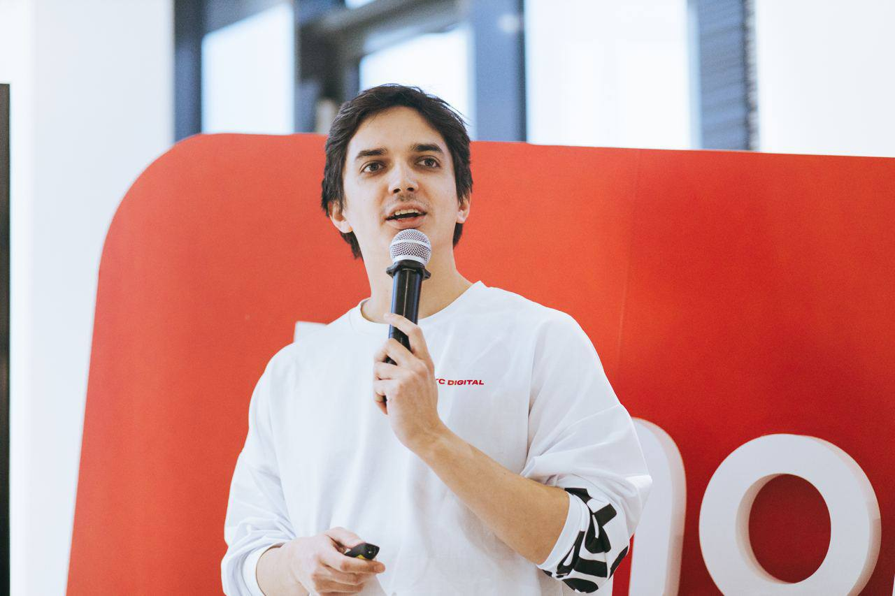

The Kitchen
at Rush HourКухня
в час пик
LLM Serving Mastery: vLLM, Multi-GPU, and Production Deployment — course overview, the leaderboard, and why a naive pipeline dies at 64 clients.
LLM Serving Mastery: vLLM, Multi-GPU и продакшен-деплой — обзор курса, лидерборд и почему наивный пайплайн умирает на 64 клиентах.

This term the course is a restaurant kitchen. The model is the cook, the GPU is the stove, every request is an order — and the orders never arrive one at a time.Весь семестр курс — это ресторанная кухня. Модель — повар, GPU — плита, каждый запрос — заказ, и заказы никогда не приходят по одному.
Today's menuМеню на сегодня
AgendaПланWho I amКто я
Your instructor — and the guide who runs the kitchen.Ваш преподаватель — и гид, который держит кухню.

Your instructorВаш преподаватель
BioО себе- · Education: MSc in Robotics & Computer Vision, Innopolis University (2021)Образование: магистратура, робототехника и компьютерное зрение, Иннополис (2021)
- · Now: PhD student — Deep Learning & Brain–Computer InterfacesСейчас: аспирант — Deep Learning и интерфейсы мозг–компьютер
- · Industry: Lead Developer, MWS RnD · earlier — Machine Learning for BankingИндустрия: ведущий разработчик, MWS RnD · ранее — ML для банков
- · Teaching: Probability & Statistics, Digital Signal Processing, Machine Learning, Deep Learning — Innopolis University, SPbU, HSEПреподавание: теория вероятностей, ЦОС, машинное и глубокое обучение — Иннополис, СПбГУ, ВШЭ


Meet Serega — your doodle guide. This term he is the head cook: same green cap, plus an apron. He shows up whenever an idea needs a picture.Знакомьтесь: Серега — ваш рисованный гид. Весь семестр он шеф-повар: та же зеленая шапочка плюс фартук. Появляется всегда, когда идее нужна картинка.
Why serving
is hardПочему сервинг
— это трудно
64 guests walk in at once. What happens to a model that was only ever asked one question at a time?64 гостя входят разом. Что будет с моделью, которой раньше задавали только по одному вопросу за раз?
Training cooks the dish once.
Serving cooks it for everyone, every night —
and the guests all arrive at seven.Обучение готовит блюдо один раз.
Сервинг готовит его для всех, каждый вечер —
и все гости приходят к семи.


transformers.pipeline behind a web server is this kitchen: every order is cooked perfectly — one at a time.transformers.pipeline за веб-сервером — вот эта кухня: каждый заказ готовится идеально — по одному за раз.
When the k-th guest gets the answerКогда k-й гость получает ответ
Back-of-the-envelope · step with →Прикидка на салфетке · шаги по стрелке →Assume one answer = 256 output tokens, and the naive server generates 40 tokens/s for a single request → 6.4 s per order. Orders are served strictly one after another.Пусть один ответ = 256 выходных токенов, а наивный сервер генерирует 40 tokens/s на один запрос → 6.4 s на заказ. Заказы готовятся строго по одному.
Why one order at a time wastes the stoveПочему по одному заказу за раз плита простаивает
Every decode step reads all the weightsКаждый шаг decode читает все веса≤ ~110 tokens/s, no matter how fast the math units are.Один токен за шаг на один запрос →
≤ ~110 tokens/s, какими бы быстрыми ни были вычислительные блоки.
ceiling ~64× higher, until compute or memory runs out.То же чтение весов обслуживает 64 запроса →
потолок ~64× выше, пока не исчерпаются вычисления или память.
Compute, KV traffic and scheduling still grow.Батчинг при decode дешев по трафику весов.
Вычисления, трафик KV и планирование все равно растут.
Common misconceptionЧастое заблуждение
Bust the mythРазбить миф“Our LLM is slow under load. We need a faster GPU.”«Наш LLM медленный под нагрузкой. Нужен более быстрый GPU.»
The catch: counter spaceПодвох: место на стойке
Every live order keeps its KV cache in VRAMКаждый живой заказ держит свой KV-кэш в VRAMvector per headвектор key и value
на каждую голову
\(36 \times 8 \times 128\) for a 4B-class modelслои × KV-головы × размер головы:
\(36 \times 8 \times 128\) для модели класса 4B
kept for every token of every live requestна токен в FP16 (2 bytes) —
хранится для каждого токена каждого живого запроса
16 GB of VRAM, budgeted16 GB VRAM по бюджету
Batching amortizes weight traffic — but consumes compute and memoryБатчинг амортизирует трафик весов — но тратит вычисления и память| Weights, 4B in BF16Веса, 4B в BF16 | 8 GB |
| Runtime, activationsРантайм, активации | ~2 GB |
| Left for the KV cacheОстается на KV-кэш | ~6 GB |
| ÷ 144 KiB per token÷ 144 KiB на токен | ≈ 40 000 tokens |
| ÷ 64 guests÷ 64 гостя | ≈ 630 tokens each≈ 630 tokens на каждого |
The leaderboard load is 64 × (512 + 256) ≈ 49 000 tokens. This setup does not fit it — the scheduler makes guests wait or evicts someone.Нагрузка лидерборда: 64 × (512 + 256) ≈ 49 000 tokens. Это не влезает — планировщик заставляет гостей ждать или выселяет кого-то.
Quantized weights and KV cache, PagedAttention's no-waste allocation, prefix caching — topics 3, 5 and 7.Квантованные веса и KV-кэш, аллокация без отходов в PagedAttention, prefix caching — темы 3, 5 и 7.

Continuous batching: one wok, many orders. A new order joins at the next toss; a finished plate leaves at the next toss. Nobody waits for the whole table.Continuous batching: один вок, много заказов. Новый заказ подлетает на следующем броске; готовая тарелка уходит на следующем. Никто не ждет, пока закончится весь стол.
The four numbers we will measure all termЧетыре числа, которые мы меряем весь семестр
Same numbers in the demo, the labs and the leaderboardТе же числа в демо, лабах и лидерборде| MetricМетрика | In the kitchenНа кухне | DefinitionОпределение |
|---|---|---|
| TTFT | time to the first biteвремя до первого кусочка | time to first token: from sending the request to receiving the first streamed tokenвремя до первого токена: от отправки запроса до прихода первого токена стрима |
| TPOT | pace between coursesтемп между блюдами | decode duration divided by post-first-token gaps; related to, but not identical with, an individual inter-token latencyвремя decode, деленное на промежутки после первого токена; связано с межтокенной латентностью, но не совпадает с ней |
| ThroughputThroughput | plates per hourтарелки в час | output tokens per second, summed over all concurrent requestsвыходные токены в секунду, в сумме по всем конкурентным запросам |
| p95 | the slow tailмедленный хвост | the value 95% of successful requests beat; always report failures beside itзначение, которое побили 95% успешных запросов; рядом всегда сообщайте и отказы |
Bigger batches raise throughput and usually hurt TTFT and TPOT. Every configuration choice in this course is a point on that curve.Больше батчи поднимают throughput и обычно бьют по TTFT и TPOT. Каждый выбор конфигурации в курсе — точка на этой кривой.
at 64 clients on the same T4, how many times more tokens/s will vLLM deliver than the naive pipeline? Write a number down.на 64 клиентах на той же T4 — во сколько раз больше tokens/s vLLM даст против наивного пайплайна? Запишите число.
Live demo: pipeline vs vLLMДемо: pipeline vs vLLM
Colab · T4 · same model, same GPU, two serversColab · T4 · та же модель и GPU, два сервера| ClientsКлиенты | pipeline tok/spipeline tok/s | vLLM tok/svLLM tok/s | pipeline p95 TTFTpipeline p95 TTFT | vLLM p95 TTFTvLLM p95 TTFT |
|---|---|---|---|---|
| 1 | 19.7 | 64.1 | 0.181 s | 0.033 s |
| 8 | 22.5 | 324.2 | 25.269 s | 0.109 s |
| 32 | 19.7 | 957.2 | 50.903 s | 0.225 s |
| 64 | 18.7 | 1519.3 | 53.251 s | 0.523 s |
Published T4 rehearsal: median successful-output tok/s across three waves; p95 TTFT of successful requests only. At 64 clients, failures were 154/192 vs 0/192. Method, ranges and raw records. Your live run may differ.Публикация T4: медиана tok/s успешных, три волны; p95 TTFT успешных. Отказы на 64: 154/192 против 0/192. Метод и записи.
- 1Naive server:
pipeline+ one lockНаивный сервер:pipeline+ лок - 2vLLM OpenAI-compatible serverOpenAI-совместимый сервер vLLM
- 3One asyncio load client for bothОдин asyncio-клиент на оба
The kitchen dictionaryКухонный словарь
The metaphor, pinned down onceМетафора, зафиксированная раз и навсегда| KitchenКухня | Serving · topicСервинг · тема |
|---|---|
| the cook · the stoveповар · плита | model weights · the GPUвеса модели · GPU · 1–2 |
| prepping ingredients · cooking course by courseзаготовка ингредиентов · готовка блюдо за блюдом | prefill · decode, one token per stepprefill · decode, один токен за шаг · 2 |
| counter spaceместо на стойке | KV cache in VRAMKV-кэш в VRAM · 2, 5 |
| smaller pansкастрюли поменьше | quantizationквантование · 3 |
| one big wok · counter split into traysодин большой вок · стойка нарезана на лотки | continuous batching · PagedAttentioncontinuous batching · PagedAttention · 5 |
| KitchenКухня | Serving · topicСервинг · тема |
|---|---|
| reusing a base sauceповторное использование соуса-основы | prefix cachingкэш префиксов · 7 |
| the pass · the takeaway boxокно выдачи · коробочка навынос | the API layer · the Docker imageAPI-слой · Docker-образ · 8–9 |
| several cooks on one dishнесколько поваров над одним блюдом | tensor parallelismтензорная параллельность · 10 |
| opening another kitchenоткрытие еще одной кухни | replicas + autoscaling (HPA)реплики + автоскейлинг (HPA) · 11–12 |
| the ticket boardдоска заказов | observabilityнаблюдаемость · 13 |
What this
course isЧто это
за курс
From one stove to a chain of kitchens — 16 topics: lectures, and a hands-on seminar wherever the hardware allows.От одной плиты до цепочки кухонь — 16 тем: лекции и практический семинар там, где позволяет железо.
What you will be able to doЧто вы сможете делать
OutcomesРезультаты- ✓Explain where inference time and memory go — prefill vs decode, the KV cache, bandwidth — and predict the bottleneck before measuring it.Объяснить, куда уходят время и память инференса — prefill против decode, KV-кэш, bandwidth — и предсказать узкое место до измерения.
- ✓Quantize a model and defend the speed / memory / quality trade-off with numbers.Квантовать модель и защитить числами трейд-офф скорость / память / качество.
- ✓Serve a model through vLLM's OpenAI-compatible API and tune it for a given concurrency profile.Поднять сервинг модели через OpenAI-совместимый API vLLM и настроить его под заданный профиль конкурентности.
- ✓Benchmark a serving stack honestly: throughput, TTFT, TPOT, p95 and failures, from 1 to 128+ clients.Бенчмаркать serving-стек честно: throughput, TTFT, TPOT, p95 и отказы — от 1 до 128+ клиентов.
- ✓Package, deploy and scale it: Docker, tensor parallelism, Kubernetes with GPU Operator and HPA.Упаковать, задеплоить и масштабировать: Docker, тензорная параллельность, Kubernetes с GPU Operator и HPA.
- ✓Operate it: metrics, dashboards, alerts, and cost per million tokens.Эксплуатировать: метрики, дашборды, алерты и цена за миллион токенов.
The course mapКарта курса
Seven blocks, one kitchen growing upСемь блоков, одна взрослеющая кухняlearn the stoveосваиваем плиту
smaller pansкастрюли поменьше
the big wokбольшой вок
rush hourчас пик
the passокно выдачи
more kitchensбольше кухонь
run the restaurantуправляем рестораном
Topics, not weeks: the pace adapts to the group, the order does not.Темы, а не недели: темп подстраивается под группу, порядок — нет.
Topics 1–8 · one GPU, many guestsТемы 1–8 · одна GPU, много гостей
Lecture + seminar eachЛекция + семинар на каждую| # | LectureЛекция | SeminarСеминар |
|---|---|---|
| 1 | Modern LLM inference systems & production challengesСовременные системы LLM-инференса и продакшен-вызовы | Environment; models via transformers.pipelineОкружение; модели через transformers.pipeline |
| 2 | Bottlenecks: KV cache, memory hierarchy, autoregressionУзкие места: KV-кэш, иерархия памяти, авторегрессия | GPU profiling, first benchmarksПрофилирование GPU, первые бенчмарки |
| 3 | Quantization for productionКвантование для продакшена | Quantize and compare trade-offsКвантуем и сравниваем трейд-оффы |
| 4 | vLLM architecture & OpenAI-compatible servingАрхитектура vLLM и OpenAI-совместимый сервинг | vLLM + OpenAI SDKvLLM + OpenAI SDK |
| 5 | PagedAttention & continuous batchingPagedAttention и continuous batching | vLLM vs pipeline, moderate loadvLLM против pipeline, умеренная нагрузка |
| 6 | High concurrency: one instance, 50–200+ clientsВысокая конкурентность: один инстанс, 50–200+ клиентов | Concurrency 8 / 32 / 64 / 128 labЛаба конкурентности 8 / 32 / 64 / 128 |
| 7 | Tuning vLLM for concurrency levelsТюнинг vLLM под уровни конкурентности | Systematic parameter searchСистематический поиск параметров |
| 8 | Production APIs: FastAPI + vLLMПродакшен-API: FastAPI + vLLM | Streaming, validation, guardrailsСтриминг, валидация, guardrails |
Topics 9–16 · more stoves, more kitchensТемы 9–16 · больше плит, больше кухонь
Topics 10–12: hands-on infrastructure blockТемы 10–12: практический инфраструктурный блок| # | LectureЛекция | SeminarСеминар |
|---|---|---|
| 9 | Docker for LLM inferenceDocker для LLM-инференса | A lean vLLM image, GPU containersХудой vLLM-образ, GPU-контейнеры |
| 10 | Multi-GPU inference: tensor parallelismМульти-GPU-инференс: тензорная параллельность | Hands-on 2- and 4-GPU comparisonСравнение 2 и 4 GPU на практике |
| 11 | Kubernetes for LLM serving: GPU Operator & HelmKubernetes для LLM-сервинга: GPU Operator и Helm | Hands-on GPU workload + Helm releaseGPU-ворклоад + Helm-релиз |
| 12 | Advanced Kubernetes: single-pod concurrency & HPAПродвинутый Kubernetes: конкурентность пода и HPA | Hands-on autoscaling + failure drillАвтоскейлинг + дрилл отказа |
| 13 | LLMOps: observability, monitoring, costLLMOps: наблюдаемость, мониторинг, стоимость | Prometheus + Grafana for vLLMPrometheus + Grafana для vLLM |
| 14 | Fine-tuning in the serving pipelineFine-tuning в serving-пайплайне | LoRA adapters in vLLMLoRA-адаптеры в vLLM |
| 15 | Agentic workloads & PD disaggregationАгентные нагрузки и PD-дезагрегация | Agent trace replay + PD-split plannerРеплей агентных трейсов + PD-split |
| 16 | Best practices, cost optimization, trendsЛучшие практики, стоимость, тренды | Project defenses, final reviewЗащиты проектов, финал |
The leaderboardЛидерборд
Ten rounds. One judge GPU. Your repository from day one.Десять раундов. Одна судейская GPU. Ваш репозиторий с первого дня.

From this week you keep your own inference repository. Each round I check out your code, run it on the same GPU as everyone else, and measure speed and quality. The board is public. Rounds close on Thursdays at 23:59 Moscow time.С этой недели у вас свой репозиторий инференса. Каждый раунд я чекаю ваш код, запускаю на той же GPU, что у всех, и меряю скорость и качество. Таблица публична. Раунды закрываются по четвергам в 23:59 по Москве.
How a round worksКак устроен раунд
Measured automatically · reviewed before publication · step with →Меряется автоматически · проверяется до публикации · шаги по стрелке →round-NN tag points to. Moving it after capture changes nothing.Судья фиксирует коммит, на который указывает ваш тег round-NN. Сдвинуть его после захвата — ничего не меняет.serve.sh (or your Dockerfile) must list submission on /v1/models within one shared 45 min startup budget.serve.sh (или ваш Dockerfile) должен показать submission на /v1/models в общем стартовом бюджете 45 min.The submission contractКонтракт сабмишена
If I cannot run it from a clean machine, it does not countЕсли я не могу запустить это с чистой машины — не считаетсяsubmission.yaml # model + revision
prepare.sh # install + download
serve.sh # offline start
pyproject.toml # dependencies
uv.lock # pinned, reproducible
JOURNAL.md # one entry per round
Dockerfile # optional: used if present- ·Model: any open-weight model, with a declared immutable revision, that serves 64 × (512 + 256) tokens at once in 16 GB.Модель: любая open-weight модель с заявленной неизменной ревизией, которая держит 64 × (512 + 256) tokens разом в 16 GB.
- ·Stack: anything — vLLM, SGLang, llama.cpp, TensorRT-LLM, your own kernels.Стек: что угодно — vLLM, SGLang, llama.cpp, TensorRT-LLM, свои кернелы.
#!/usr/bin/env bash
set -euo pipefail
exec /runtime/.venv/bin/vllm serve \
Qwen/Qwen2.5-3B-Instruct \
--revision <immutable-sha> \
--served-model-name submission \
--host 0.0.0.0 --port 8000 \
--dtype half --max-model-len 4096 \
--gpu-memory-utilization 0.90Fixed: port 8000, model name submission, streaming /v1/chat/completions with max_tokens, ignore_eos and 4096-token requests. Make a private copy of the public example; see Start here.Зафиксировано: порт 8000, имя модели submission, стриминг /v1/chat/completions с max_tokens, ignore_eos и запросами по 4096-token. Сделайте приватную копию публичного примера; см. Start here.
Your dev box is not the judgeВаша dev-машина — не судья
Colab T4 vs RTX 5070 TiColab T4 против RTX 5070 Ti| Colab T4 (you)Colab T4 (вы) | RTX 5070 Ti (judge)RTX 5070 Ti (судья) | |
|---|---|---|
| ArchitectureАрхитектура | Turing · sm_75 | Blackwell · sm_120 |
| VRAM | 16 GB GDDR6 | 16 GB GDDR7 |
| Memory bandwidthПропускная способность памяти | 320 GB/s | 896 GB/s |
| BF16 · FlashAttention-2 | noнет | yesда |
| FP8 / FP4 tensor coresFP8 / FP4 тензорные ядра | noнет | yesда |
Find a suitable CUDA GPU for development; Colab availability is not guaranteed. FP8 / NVFP4 need compatible hardware. Tuesday startup diagnostics arrive in your private readiness Issue; only judge measurements determine your score.Найдите подходящую CUDA GPU для разработки; доступность Colab не гарантирована. FP8 / NVFP4 требуют совместимого железа. Вторничная стартовая диагностика приходит в ваш приватный readiness Issue; балл определяют только измерения судьи.
How a round is scoredКак оценивается раунд
Gates first, then one number: SСначала гейты, потом одно число: S| StepШаг | RuleПравило |
|---|---|
| SnapshotСнапшот | Thursday 23:59 MSK deadline; Friday 00:00 tag snapshot. No round-NN tag → 0.Дедлайн — четверг 23:59 MSK; снапшот тега в пятницу 00:00. Нет тега round-NN → 0. |
| ContractКонтракт | Server lists submission within one shared 45 min startup budget; a streamed smoke answer works.Сервер показывает submission в общем стартовом бюджете 45 min; стриминговый smoke-ответ работает. |
| Quality gateГейт качества | GSM8K, IFEval, MMLU-Pro subsets (lm-eval): each ≥ 90% of the reference.Подмножества GSM8K, IFEval, MMLU-Pro (lm-eval): каждое ≥ 90% от референса. |
| Latency & honesty gatesГейты латентности и честности | p95 TTFT among successful requests at 64 clients ≤ the round's SLO; errors ≤ 1%; every hidden length probe ≥ 95% of 256 tokens.p95 TTFT по успешным запросам на 64 клиентах ≤ SLO раунда; ошибок ≤ 1%; каждый скрытый length-пробинг ≥ 95% от 256 tokens. |
| Same modelТа же модель | Mean hidden at-rest/load pair similarity ≥ published floor; per-request length and output-diversity checks also pass.Средняя схожесть скрытых пар at-rest/load ≥ опубликованного пола; проверки длины и разнообразия выхода по запросам тоже проходят. |
| SpeedСкорость | \(S = \sqrt{\text{tok/s}_{32} \cdot \text{tok/s}_{64}}\)\(S = \sqrt{\text{tok/s}_{32} \cdot \text{tok/s}_{64}}\) |
| Mark 0–5Оценка 0–5 | \(5 \times \min(1,\ S / S_{\text{bar}})\); any failed gate → 0. Round = 4%: points = mark × 0.8.\(5 \times \min(1,\ S / S_{\text{bar}})\); любой упавший гейт → 0. Раунд = 4%: баллы = оценка × 0.8. |
Round 1 calibration — verifiedКалибровка раунда 1 — проверена
Config v5 · RTX 5070 Ti · 30 September 2026Config v5 · RTX 5070 Ti · 30 сентября 2026| BarБар | Round 1Раунд 1 |
|---|---|
| GSM8K | ≥ 53.10% |
| IFEval | ≥ 53.55% |
| MMLU-Pro | ≥ 41.79% |
| p95 TTFT at 64 clientsp95 TTFT на 64 клиентах | ≤ 0.8 s |
| \(S_{\text{bar}}\) | 2505.2 tok/s |
The reference preserves model revision, judge/config hashes, quality scores, raw run artifacts and GPU identity. Published bars come from this config-v5 run.Референс сохраняет ревизию модели, хэши judge/config, оценки качества, сырые артефакты прогона и личность GPU. Опубликованные бары — из этого прогона config-v5.
The instructor evaluates every Round 1 submission with the same protected seed. Students do not obtain it or put it in their repository.Преподаватель оценивает каждый сабмишен раунда 1 одним и тем же защищенным сидом. Студенты его не получают и не кладут в репозиторий.
How to skip the final examКак освободиться от финального экзамена
Overdrive · step with →Overdrive · шаги по стрелке →The defense: tell the story of your kitchenЗащита: история вашей кухни
Mandatory · 10%Обязательна · 10%## Round 04 — prefix caching, more seqs
Hypothesis: prompts share a long system
prompt → reuse its KV instead of recomputing.
Change: --enable-prefix-caching,
--max-num-seqs 64 → 96
Judge: c=64 tok/s +30 %, p95 TTFT −0.7 s
Kept: yes. Next: FP8 KV cache.- ·Every change: hypothesis → measurement → decision.Каждое изменение: гипотеза → измерение → решение.
- ·Failed experiments count — they are half the story.Неудачные эксперименты — тоже история.
- ·Explain why it worked, not only that it did.Объяснить почему сработало, не только факт.

GradingОценивание
Half earned week by week, half at the exam — unless you earn your way out of it.Половина зарабатывается неделю за неделей, половина на экзамене — если не заслужите освобождение.
Graded componentsОцениваемые компоненты
100 points100 баллов| ComponentКомпонент | WeightВес | HowКак |
|---|---|---|
| Final examФинальный экзамен | 50% | All 16 topics, including multi-GPU and Kubernetes. Waived with Overdrive ≥ 10.Все 16 тем, включая мульти-GPU и Kubernetes. Освобождение при Overdrive ≥ 10. |
| LeaderboardЛидерборд | 40% | 10 rounds × 4%. A round = mark (0–5) × 0.8.10 раундов × 4%. Раунд = оценка (0–5) × 0.8. |
| Project defenseЗащита проекта | 10% | Mandatory. The engineering story behind your leaderboard results.Обязательна. Инженерная история за вашими результатами лидерборда. |
| TotalИтого | 100% |
Grade scale and policyШкала оценок и политика
Final score → letterИтоговый балл → буква| GradeОценка | Score rangeДиапазон баллов |
|---|---|
| A | \([90, 100]\) |
| B | \([70, 90)\) |
| C | \([50, 70)\) |
| D | \([0, 50)\) |
Cheating: zero tolerance. No late submissions — a missed round deadline is a 0 for that round. Gaming the benchmark (caching eval answers, special-casing the prompt set, degrading output to win speed) disqualifies the round.Списывание: нулевая терпимость. Просрочек нет — пропущенный дедлайн раунда — это 0 за раунд. Подгонка под бенчмарк (кэширование eval-ответов, спец-кейсы под промпт-сет, ухудшение выхода ради скорости) дисквалифицирует раунд.
How to succeedКак преуспеть
What to bring, and the habits that win the leaderboard.Что взять с собой и привычки, которые выигрывают лидерборд.
How to succeedКак преуспеть
Prerequisites · habitsПререквизиты · привычкиBringВзять
- ·Python, confidently; asyncio basics help.Python, уверенно; asyncio — плюс.
- ·Linux command line and git;
uvis shown in seminar 1.Командная строка Linux и git;uv— в семинаре 1. - ·Deep-learning basics: tokens, a transformer forward pass, PyTorch at the reading level.Основы DL: токены, forward pass, PyTorch на уровне чтения.
- ·HTTP / REST basics: requests, JSON, streaming.Основы HTTP / REST: запросы, JSON, стриминг.
- ·Accounts: GitHub, Hugging Face, Google (Colab).Аккаунты: GitHub, Hugging Face, Google (Colab).
No Docker or Kubernetes experience needed — that is what topics 9–12 are for.Docker/Kubernetes не нужны заранее — для этого темы 9–12.
Habits that winПривычки победителей
- ✓Create your repository this week and submit round 1 early — a boring server that starts beats a clever one that does not.Создайте репозиторий на этой неделе и сдайте раунд 1 заранее — старт важнее изящества.
- ✓Change one thing per experiment; predict, then measure.Одно изменение за эксперимент: предсказание, потом измерение.
- ✓Write the journal entry the day you run the experiment.Запись в журнал — в день эксперимента.
- ✓Read your private readiness Issue.Читайте приватный readiness Issue.
Baseline 10–14 h/week · advanced 16–20. Overflow → required guided self-study.База 10–14 h/week · продвинутый 16–20. Излишек → обязательная самоподготовка с поддержкой.
Read nextЧитать дальше
The papers behind today's picturesСтатьи за сегодняшними картинками- Kwon, W. et al. · Efficient Memory Management for Large Language Model Serving with PagedAttention · SOSP 2023
- Yu, G.-I. et al. · Orca: A Distributed Serving System for Transformer-Based Generative Models · OSDI 2022
- Dao, T. et al. · FlashAttention: Fast and Memory-Efficient Exact Attention with IO-Awareness · NeurIPS 2022
- Agrawal, A. et al. · Taming Throughput-Latency Tradeoff in LLM Inference with Sarathi-Serve · OSDI 2024
- Lin, J. et al. · AWQ: Activation-aware Weight Quantization for LLM Compression and Acceleration · MLSys 2024
Kitchen's open.Кухня открыта.
Slides, the demo notebook, the leaderboard and its rules — via the QR code or the link below.Слайды, демо-ноутбук, лидерборд и его правила — по QR-коду или ссылке ниже.

Mise-en-place is the religion of all good line cooks.Mise-en-place — религия всех хороших линейных поваров.